Web Admin Panel
Open http://<display-ip>/ in your computer's browser to edit your dashboard. The display shows the address in the last step of its setup and under Settings → WiFi; Home Assistant shows it on the display's device page.
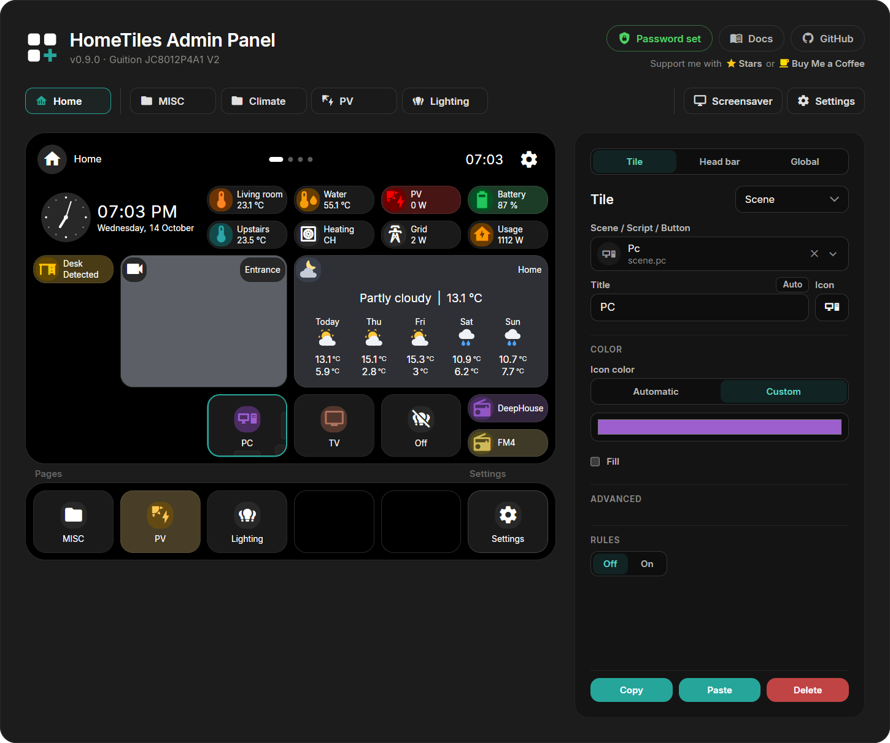
Select a tile in the preview to open its settings. Each folder has its own tab, and the preview shows the display's current layout.
Changes save automatically
Tile edits save as you make them and appear on the display.
Creating a Tile
- Click an empty cell.
- Choose a Type.
- Choose the entity where needed and adjust the tile.
The entity picker searches like Home Assistant: type part of a name, an area or a device. Favorites puts this display's entities on top (those its tiles use and those selected for it in the Bridge), Recent the ones you picked most in this browser, and All lists everything that fits the tile. A paired display with a Web Admin password finds every entity in Home Assistant; otherwise the picker offers the entities selected in the Bridge options. Picking an entity also takes its name and icon.
Every tile has these settings:
- Title: optional label; press Enter for a second line. Both lines are centered together, and each line ends in
...if it exceeds the available width. - Icon (MDI): a Material Design Icon name. Show icon list opens the catalog.
- Color: the Icon color, and Fill to fill the tile with it. Without your own color the icon keeps the color of its entity, for example a light's color. Clock, Text and Animation tiles have their own color instead.
- Advanced: options of the tile type, where it has any.
- Column, Row, Width, Height: position and size in half steps.
See Tile Types to choose the right type.
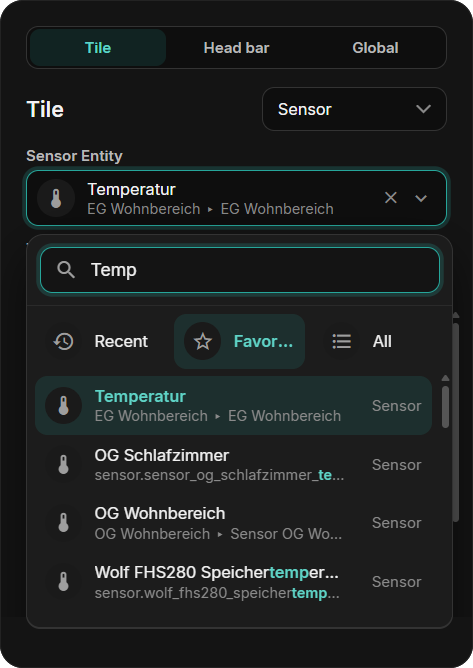
Type-specific settings
Fields depend on the selected type. A numeric Sensor offers:
| Field | Purpose |
|---|---|
| Entity | Sensor to display |
| Unit | Unit label, such as °C or W |
| Decimals | Decimal places |
| Value size | Size of the displayed value |
| Display mode | Text or a gauge with a minimum and maximum |
Number, Select, and Date/Time also offer Value size with the same choices as Sensor. In half-height tiles the value uses 20, 24, or 28. Choose the matching entity and whether a tap or long press opens its popup.
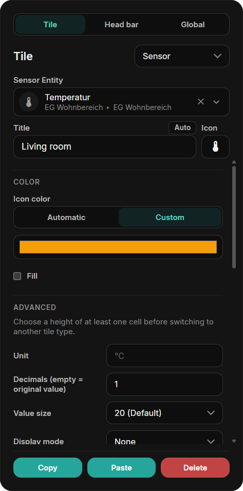
Global Settings
The Global tab next to Tile applies to the whole display:
| Setting | What it does |
|---|---|
| Tile borders | Draws a thin line around the tiles. Clock and Text tiles can switch it off individually. |
| Layout | Shows the active layout and its grid; a click opens the layout window. |
| Theme | Dark, Light or Automatic (light by day, dark at night), for the display and the Web Admin. |
| Edge swipes | One action per screen edge: Settings, Home, Back, or the screensaver. New displays open Settings from the top and go Home from the bottom. |
Corners, circles and the tile cards follow the theme; there is no separate radius or tile color setting.
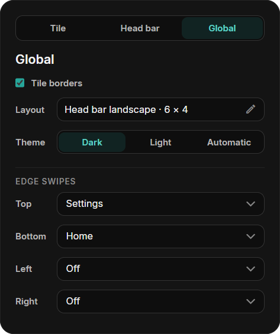
Head Bar
In the head bar layouts the Head bar tab, between Tile and Global, sets Home's head:
- Home title and icon: Auto shows "Home" in the display's language and the house.
- Gear for Settings, Clock, and Page overview on the dots. Without the overview, the dots only show the page.
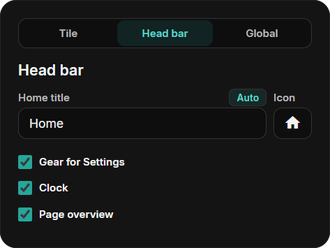
Layouts
Every display keeps its tiles in three layouts: Classic, Head bar landscape and Head bar portrait (portrait only on ESP32-P4 displays that can stand upright). A click on the Layout field in the Global tab opens the layout window (Change layout):
- The screen is at the top left, the Storage to the right and below it. Drag tiles between them; a tile in the storage is not shown in that layout but keeps its settings.
- Each folder has room for its storage on top of its grid cells, so tiles in the storage never take the place a new tile on a free cell needs. When a layout's storage holds more tiles than it has room for, Save waits until you place or delete some.
- A folder that is completely full still shows the frame on a free cell; a click on it tells you so. Clear out the storage here and save.
- Each layout has its own tab and places. Copy from … takes the places of another layout as a start.
- A red tile has no place yet. While a folder or the Settings tile is red, Save and Switch wait: every folder must stay reachable.
- X on a tile deletes it from every layout, after a question.
- Switch restarts the display in the chosen layout. Its places stay saved when you switch back.
- The Screensaver tab places the screensaver's tiles and clock for this layout.
Places are saved with Save; nothing changes on the display before that.
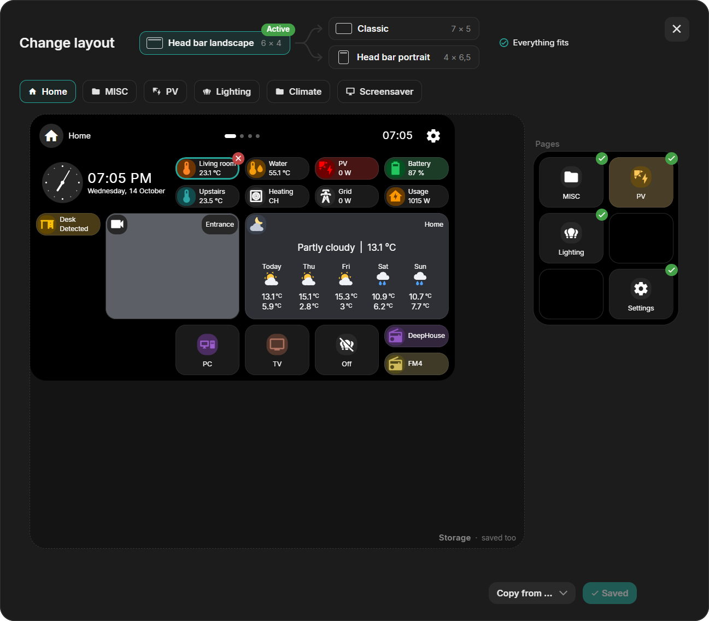
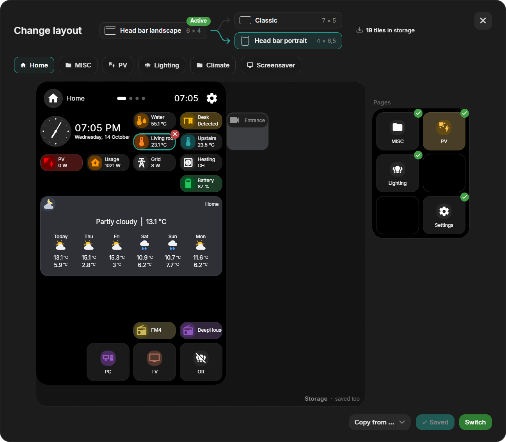
Pages
In the head bar layouts, Home has five page fields beside or below its grid. Drag a folder tile from Home into a field: the folder becomes a page and its tile leaves Home. Drag it out again to make it a tile. A new folder can go straight into a free field: select the field's + to create a page there. Pages have no PIN: a protected folder asks before its PIN is removed.
On the display, the page dots show the pages in the order of the fields.
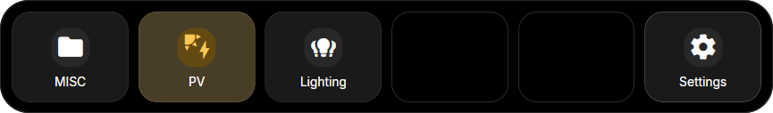
Colors and Rules
A tile's color comes from its icon. Rules change the icon color while an entity has a matching state. Set Rules to On in the tile settings; a tile with its own entity starts at Own entity and Own rules:
- Own entity / Other entity: follow the tile's own entity or any other entity. Button, Folder, Camera, Clock, and Text tiles have no entity of their own and always use another entity.
- Entity color: use the color the entity shows itself: a light's color, heating or cooling on a climate entity, and the state colors of switches, covers, and binary sensors.
- Own rules: choose the colors yourself, by value or by state (see below).
While a rule matches, it wins. Otherwise the settings above apply. Without a state, for example while Home Assistant is offline, the tile keeps its icon color.
Every color in a rule can also bring its own icon: the icon button next to a state row's color, or below a marker's value, picks it. While the rule matches, that icon replaces the tile's icon, in the tile and in its popup header; afterwards the tile's own icon comes back.
Icon Color by Value
For Sensor, Energy, and Number tiles: a color bar between Min and Max. Smooth blends the colors, Steps changes at each marker. Start from Cold → Warm, Traffic light, Battery, Humidity, or Single color. Drag a marker to move it, click it to choose its color, and double-click the bar to add one (up to six). The tile's Fill fills it in the current color.
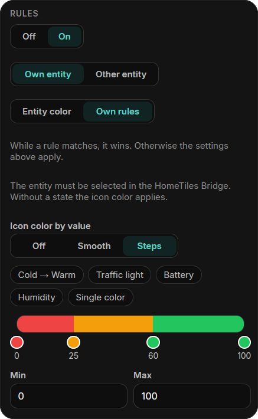
Icon Color by State
For Sensor, Binary Sensor, Select, and Date/Time tiles: up to six states, each with a color. A row matches the exact state, or any state containing its text when contains is ticked; upper and lower case do not matter, and the first match wins. Binary sensors have one color for On and one for Off. Unavailable states keep the default color.
Each row has its own Fill: the tile is filled only while that row matches, and stays a plain card otherwise. In this example, a waste sensor says when to put the bin out. Its row for "Today" colors the icon orange and fills the tile, so only the bin that goes out today stands out.
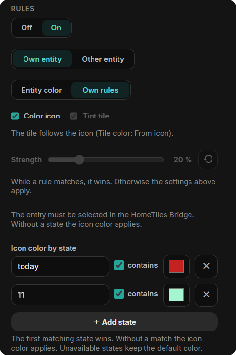
Editing Climate Mini-Tiles
Click a Climate mini-tile in the preview to edit it, or drag it to another slot. The outline shows whether you are selecting the parent tile or a mini-tile.
Choose temperature, humidity, targets, or mode. Automatic chooses values supported by the entity. Target is the single target temperature; Heating target and Cooling target are the two limits of devices that keep a range in Heat/Cool mode.
Resizing the parent changes the available slots. Mini-tiles that still fit keep their place; only those without room are hidden until the tile grows again.
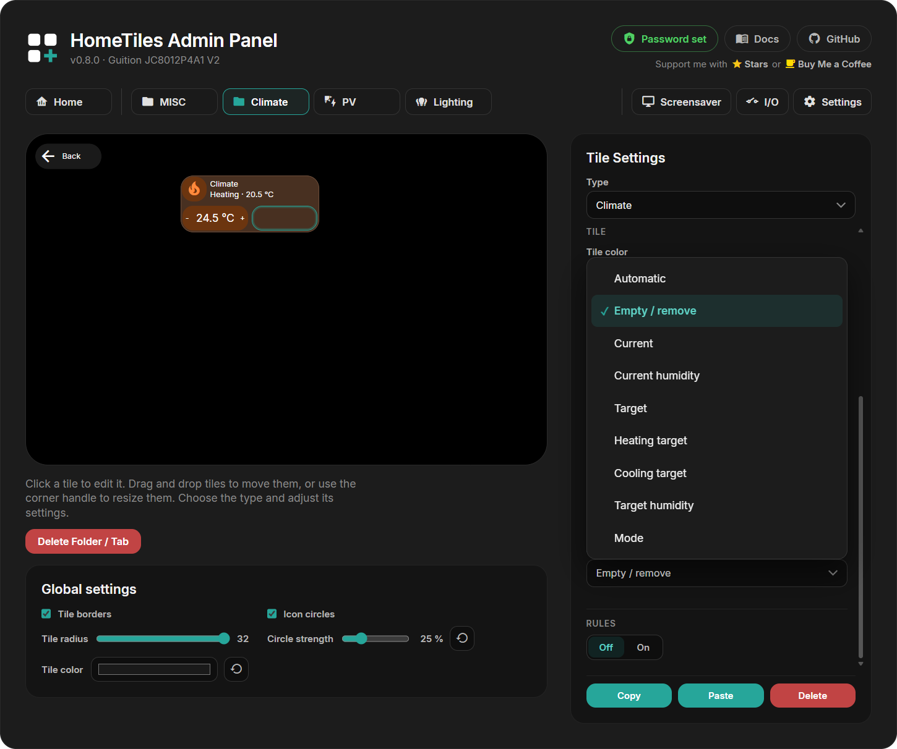
Moving, Resizing, Copying
- Move: drag a tile to another cell.
- Resize: drag its edge handles or enter Width / Height. Sizes change in half steps; almost every tile can also be half a cell high.
- Copy / Paste: duplicate a tile, including between folders. Paste onto an empty cell where the copied size fits.
- Delete: clear a tile back to an empty cell.
Folders
Choose the Folder type to create a sub-page. It appears as a Web Admin tab. In the head bar layouts its head has an X to go back; the classic layout adds a back tile. A folder that still contains tiles keeps its type until you empty it.
Delete Folder / Tab removes the folder and its tiles.
To protect a folder, select its tile, enable Protect this folder with a PIN, enter 4–8 digits, and press Apply PIN. The display then asks for the PIN before opening the folder. Folder PINs are stored only on that display and are excluded from exports.
A folder tile can also show the state of what is inside: with Rules → On, the climate entity and Entity color, a Climate folder turns orange while heating and blue while cooling.
In the classic layout, select the back tile to change its icon and color. It can be moved like any tile and made half a cell high.
Settings Tile and Access
Settings opens from the gear in the head, from the Settings tile, or by an edge swipe. In the layout window, the Settings tile has its own field: a tile parked there is not shown in that layout. Each layout keeps its own choice.
Select the Settings tile to set:
- PIN protection: ask for a 4–8 digit PIN before Settings opens.
- Hide tile: park the tile in the layout the display shows.
- Gear in the head: the same as Gear for Settings in the Head bar tab.
The public factory PIN 466384537 unlocks Settings and protected folders. This is a local child lock, not a login; protect the Web Admin itself with a Web Admin password. PINs are excluded from dashboard exports.
Screensaver Editor
Open the Screensaver tab. Select the background, clock, or a tile to edit it; drag to move and resize.
See the Screensaver guide for images, activation, and available tiles. Its Tile borders setting is independent of the global Tile borders for the normal dashboard.
Device Settings
Settings lists the same pages as the display:
- WiFi: WiFi credentials, connection type on Ethernet-capable devices, and an optional static IP shared by WiFi and Ethernet.
- Localization: language, time zone, date/time formats, and the first day of the week for the Energy popup, the Calendar, and the 30-day graph lines.
- System: firmware update, the icon file, the connection to Home Assistant, pairing, and the Web Admin password. The MQTT settings are folded in here; while the direct link is active they stay saved but unused.
- I/O: local hardware.
- Built-in camera: on displays with a camera, see below.
- Files and Diagnostics: see below.
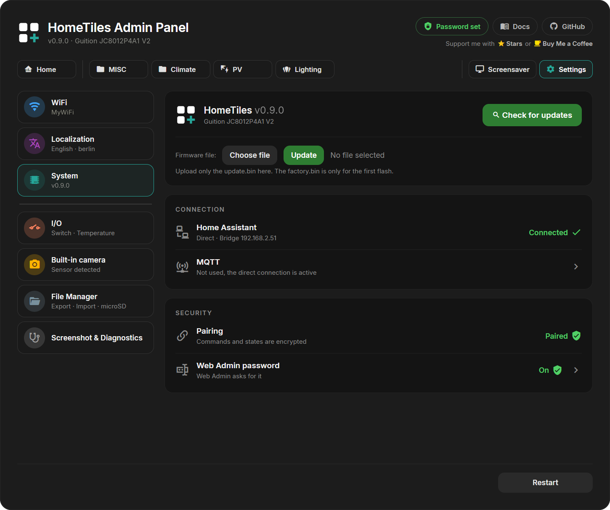
Icons
All 7447 Material Design Icons live in an icon file in the display's internal storage; 399 common icons, including Home Assistant's default icons, are built into the firmware. Without a valid icon file the display shows the built-in icons and a placeholder for the others.
A display without the file downloads it from the GitHub release of its own firmware version and restarts. If that fails, it tries again on the next restarts, up to three times per firmware version. Displays flashed with a factory image already have the file.
The Icons card below the firmware update shows the file:
- Present: the file name, the number of icons and a check mark.
- Missing or not usable: a download link to the right file for this display and firmware version (
hometiles-icons-<size>.bin), the built-in and total icon count (for example 399 / 7447), and in red why the last download or install failed. Update makes the display download the file now, also after three failed attempts.
If the display cannot reach GitHub, for example behind a firewall, download the file with the link on your computer, select it under Icon file with Choose file, and press Update. The display checks the file before it installs it and refuses one that does not match its firmware's icons, such as a file for another icon size.
The screen stays dark while the display downloads the file or installs an uploaded one. It restarts afterwards, also after a failure, and the page reloads when it answers again.
Web Admin Password
The Web Admin is open to everyone on your network by default. A password protects every page and API request, including the settings, restart, firmware upload, the file manager, and screenshots. On a paired display it also lets the entity picker find every Home Assistant entity, and locks and alarm panels need it.
- On the display, open Settings → System → Security and tap Allow next to Web Admin password.
- Within two minutes, enter the new password twice under Settings → System and select Set password.
Only someone at the display can set the first password.
- The password is never sent in plain text: the browser proves it with a one-time challenge, and the display stores only a derived key.
- Wrong passwords lock the sign-in for an increasing time, up to five minutes.
- You stay signed in for 30 days, also after a restart or update of the display. Sign out ends the browser session; Remove password opens the Web Admin to the network again.
- Forgot the password? On the display, open Settings → System → Security and remove it.
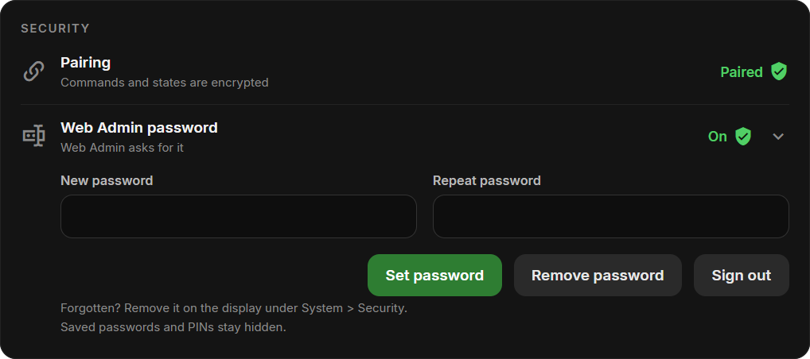
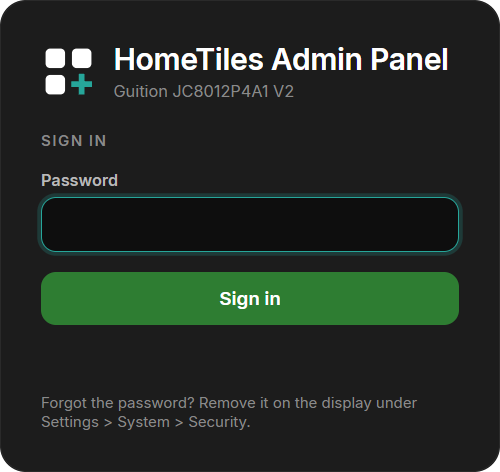
Built-in Camera
Displays with a supported camera show this section. Allow Home Assistant to use the built-in camera is off by default. When enabled, the display captures still images or a live stream only while the HomeTiles Bridge requests them.
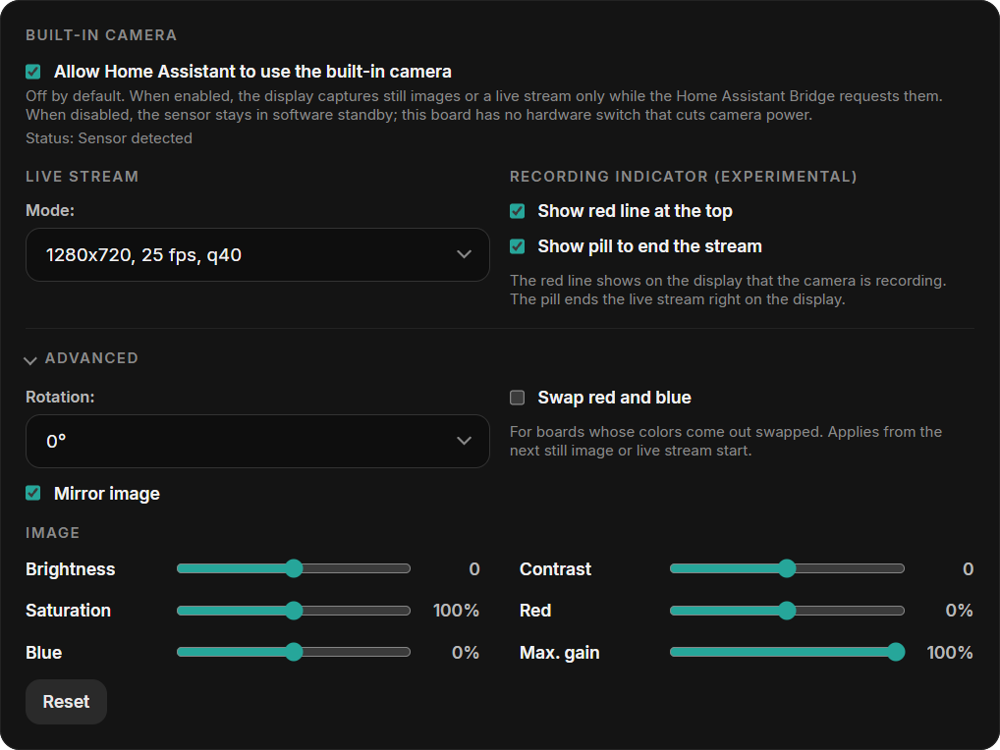
- Mode: resolution, frame rate, and JPEG quality of the live stream. Higher values need more bandwidth.
- Recording indicator: a red line at the top of the display and a circle in the head (a pill in the classic layout) to end the stream while the camera is in use.
- Advanced: rotation, mirroring, and a red/blue swap for boards whose colors come out swapped.
- Image: brightness, contrast, saturation, red and blue balance, and the maximum gain for dark rooms. Reset restores the defaults.
Local Hardware I/O
Open I/O to configure outputs, relays, or DS18B20 sensors. Only pins available for the selected device are offered. See Local Hardware I/O for setup and wiring.
Import / Export
Export saves folders, tiles, the places of every layout, the pages and the screensaver in one JSON file. It excludes local I/O assignments and PINs. Older files without layouts or screensaver data leave those unchanged.
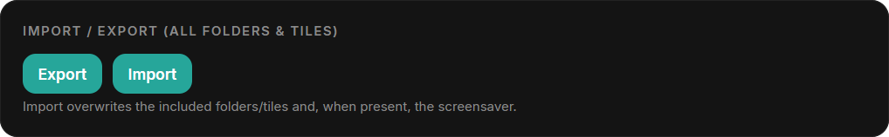
Warning
Import replaces the folders, tiles, and screensaver data contained in the file.
Screenshot & Diagnostics
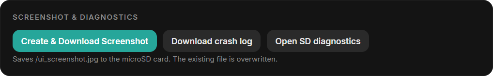
- Create & Download Screenshot: saves and downloads a JPEG of the current screen; requires microSD.
- Download crash log: downloads reset reasons and crash details.
- Open SD diagnostics: runs a short write and read test on the microSD card and shows the report.
- Core dump: download or delete a stored memory snapshot when one is available.
See Reporting a crash for the files and details to include.
Firmware Update
Check for releases or upload the matching OTA .bin under Settings → System. Follow Firmware Updates for the steps.
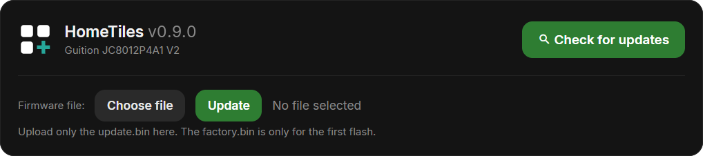
File Manager
With a FAT32 microSD card inserted, use the file manager to upload, download, rename, or delete files and create folders. A card is optional for normal dashboard use.
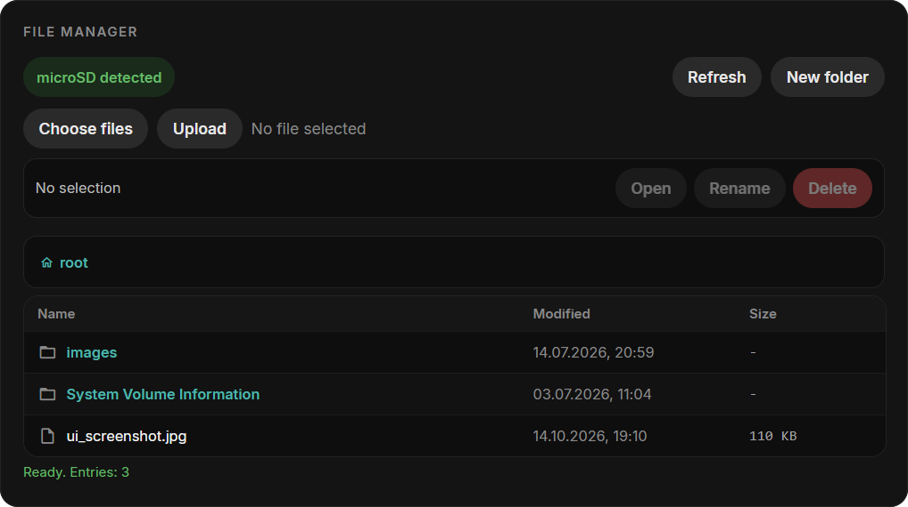